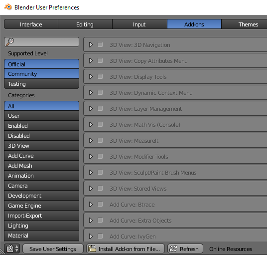
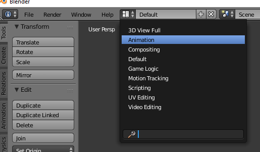
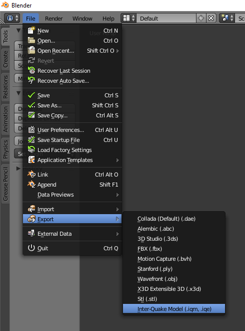
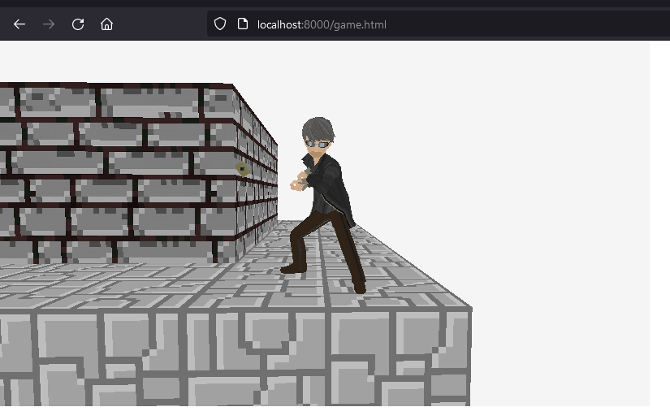
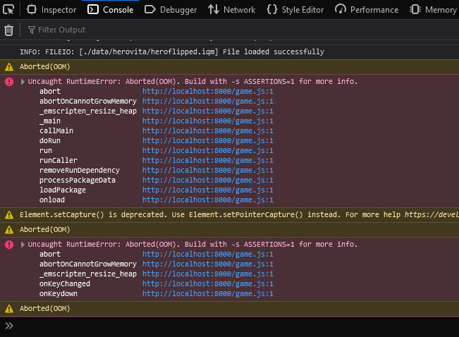

Started turn-based battle scene. Fairly straighforward, just drawing built in cubes/font/rectangle for now. One cool feature is the world-space to screen-pixel coordinates function (how the X is drawn over the selected enemy):
enemyScreenPos = GetWorldToScreen(
en->position,
camera
);
What was tricky was building for HTML5. Followed the instructions from here: https://github.com/raysan5/raylib/wiki/Working-for-Web-(HTML5) . First, installed emscripten. Next, downloaded raylib 4.0.0 source, uncompressed it to C:\raylibhtml, and built the library manually with the following lines (taken from instructions):
emcc -c rcore.c -Os -Wall -DPLATFORM_WEB -DGRAPHICS_API_OPENGL_ES2 emcc -c rshapes.c -Os -Wall -DPLATFORM_WEB -DGRAPHICS_API_OPENGL_ES2 emcc -c rtextures.c -Os -Wall -DPLATFORM_WEB -DGRAPHICS_API_OPENGL_ES2 emcc -c rtext.c -Os -Wall -DPLATFORM_WEB -DGRAPHICS_API_OPENGL_ES2 emcc -c rmodels.c -Os -Wall -DPLATFORM_WEB -DGRAPHICS_API_OPENGL_ES2 emcc -c utils.c -Os -Wall -DPLATFORM_WEB emcc -c raudio.c -Os -Wall -DPLATFORM_WEB emar rcs libraylib.a rcore.o rshapes.o rtextures.o rtext.o rmodels.o utils.o raudio.o
In order to compile for web, manually need to set the emscripen vars via
C:\emsdk\emsdk_env.bat
Then I added a batch script to compile for web (instead of using the Makefile):
set SOURCES=main.c Player.c Enemy.c Globals.c PlayerAttackAnim.c Battle.c MoveComponent.c ThirdPersonPlayer.c ::set SFLAGS=-s USE_GLFW=3 -s ASYNCIFY set SFLAGS=-s USE_GLFW=3 emcc -o game.html %SOURCES% -Os -Wall C:\raylibhtml\src\libraylib.a -I. -IC:\raylibhtml\src -L. -LC:\raylibhtml\src %SFLAGS% --preload-file data --shell-file ./minshell.html -DPLATFORM_WEB
The `--preload-file data` arg converts the data folder into a binary file that is auto loaded, so you don't need to worry about asynchronous loading.
Today's been fun: working with 3D animated models! Figured out how to generate a .iqm model file using the blender plugin: https://github.com/lsalzman/iqm. To add the plugin to blender, go to user preferences, and select "Install Add-on from File," and choose the python file in blender-* folder closest to your version (I used blender-2.74). Then search for iqm and click check to enable the plugin.
Next, to convert a model. I used the Persona 4 main character from here: https://www.models-resource.com/playstation_vita/persona4golden/. Imported the animated version of the model. Next, in order to export animations, need to know the animation names. To view, change view mode to animation, and look for the animation names. In this case, there was one giant animation (made up of multiple smaller animations such as run/attack) named ArmatureAction. Also looking at and experimenting with the timeline, can see how many frames you need. To view if the export works as expected, it's useful to see the system console as well.
To export, do file/export/Inter-Quake Model. Enter the animation data in the animations Box. There can be multiple animation data entries, separated by ','. ArmatureAction:0:275:24.0:1 means animation name ArmatureAction, start frame 0, end frame 275, 24 FPS, looping=true. Looking at the system console shows it successfully exported the anims. Without entering enything into the animations box, no animations were generated for me.
Now for loading it in raylib. Just followed the animation example from the raylib examples page, except I added animation speed control with an FPS variable:
/* Update model animation */
animTimeCounter += dt;
if (animTimeCounter >= secsPerFrame) // secsPerFrame = 1.0/FPS (FPS = 24)
{
while (animTimeCounter >= secsPerFrame) { animTimeCounter -= secsPerFrame; }
animFrameCounter++;
UpdateModelAnimation(model, anims[0], animFrameCounter);
if (animFrameCounter >= endAnimFrame) { animFrameCounter = startAnimFrame; }
}
...
DrawModelEx(
model,
position,
rotAxis, /* Axis and radians gotten via QuaternionToAxisAngle() */
Rad2Deg(rotRadians),
Vec3(scale,scale,scale),
WHITE
);
Start and End anim frames I got by playing with the timeline in Blender and estimating where each action (run/attack/etc.) beginned in terms of the keyframe numbers. I also manually added a -90 degree rotation about the X axis when drawing because the model had Z coordinate as up instead of Y. Drawing it without any textures looked like:
Note I'm also using a custom camera as a third person camera, not the built-in raylib third person one.
To texture it, I manually figured out which mesh corresponds to which texture (37 of them! uggh). The code looks like:
#define MESHID_CARDBACK 1
#define MESHID_CARDFRONT 2
#define MESHID_HAIR 3
...
static Texture2D mainCharacterModelBodyTex;
static Texture2D mainCharacterModelEyeTex;
static Texture2D mainCharacterModelFaceTex;
...
mainCharacterModelBodyTex = LoadTexture("./data/hero/bc001_body_t01.tm2.png");
mainCharacterModelEyeTex = LoadTexture("./data/hero/bc001_eye_t02.tm2.png");
mainCharacterModelFaceTex = LoadTexture("./data/hero/bc001_face_t01.tm2.png");
...
SetMaterialTexture(&mainCharacterModel.materials[0], MATERIAL_MAP_DIFFUSE, mainCharacterModelBodyTex);
SetMaterialTexture(&mainCharacterModel.materials[1], MATERIAL_MAP_DIFFUSE, mainCharacterModelEyeTex);
SetMaterialTexture(&mainCharacterModel.materials[2], MATERIAL_MAP_DIFFUSE, mainCharacterModelFaceTex);
...
SetModelMeshMaterial(&mainCharacterModel, MESHID_CARDBACK, 7);
SetModelMeshMaterial(&mainCharacterModel, MESHID_CARDFRONT, 8);
SetModelMeshMaterial(&mainCharacterModel, MESHID_HAIR, 4);
...
But yay! fully textured now:
For some reason, the web version textures don't look right though:
Added 2 other character models as party members, and added the models to the battle scene. The web version currently crashes, about out of memory:
I'm not sure why; perhaps having three models loaded is too much for the browser stack or something?
The battle player animations still need a little work; the attack anim goes on a little too long and the hit sound effect needs to play sooner. But overall, still looks kind of cool I think: